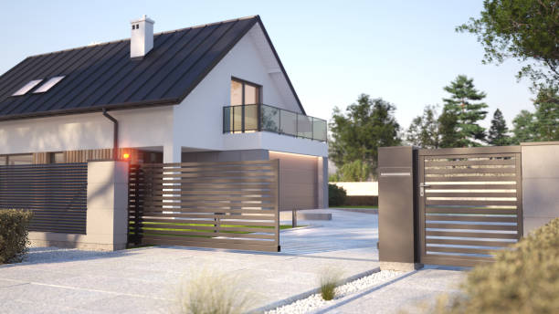

Madison Mississippi
info@securedrivewaygates.pro
Madison Mississippi
info@securedrivewaygates.pro

Transform your Madison Mississippi home with custom driveway gates tailored to your style. Durable, secure, and expertly installed by local professionals. Elevate your property’s aesthetics and security with us.
Click Here To Call Us (877) 848-1711Transform your property in Madison Mississippi with Secure Driveway Gates, the leading provider of custom driveway gates designed to elevate both security and curb appeal. Our expert team specializes in crafting gates that are not only durable and reliable but also stylish and tailored to your specific needs. Whether you’re aiming for a modern, sleek look or a more traditional design, we’ve got you covered.
In Madison Mississippi homeowners trust Secure Driveway Gates for our unmatched commitment to quality and customer satisfaction. Our gates are built from premium materials, ensuring they stand the test of time while requiring minimal maintenance. We understand that your driveway gate is the first line of defense for your home, which is why we integrate advanced security features such as automatic openers, remote access, and robust locking systems to give you peace of mind.
Beyond security, our gates are designed to enhance the aesthetic of your property. We offer a wide range of finishes and custom designs, allowing you to choose a gate that perfectly complements your home’s architecture and landscape. Our installation process is seamless and professional, ensuring that your new driveway gate not only looks great but functions flawlessly.
Choosing Secure Driveway Gates in Madison Mississippi means partnering with a company that values excellence in every project. From the initial consultation to the final installation, our team is dedicated to delivering a product that exceeds your expectations. Enhance your property’s security and style with Secure Driveway Gates. Contact us today to learn more about our services and why we’re the preferred choice for driveway gates in Madison Mississippi .
Residential & commercial Driveway Gates
Quality services at affordable prices
Immediate 24/ 7 emergency services


Choosing the right driveway gate for your property in Madison Mississippi is essential for enhancing both the aesthetic appeal and security of your home. At Secure Driveway Gates, we understand that finding the perfect gate involves several important considerations.
Firstly, evaluate your property's style and your personal preferences. Whether you’re looking for a classic wrought iron gate or a modern, sleek design, your choice should complement the architecture of your home. Our team at Secure Driveway Gates can help you explore a variety of designs and materials to match your specific needs and enhance your property’s curb appeal.
Next, consider the functionality of the gate. Automatic gates offer unparalleled convenience and security, allowing you to open and close your gate with just a click of a button. However, manual gates can be a cost-effective option if you prefer a more traditional approach. Our experts will guide you through the benefits and features of both automatic and manual options to ensure you make an informed decision.
Don’t forget to think about security features. Adding elements like intercom systems, surveillance cameras, and access control systems can significantly improve your property’s security. Secure Driveway Gates offers a range of advanced security solutions to keep your home safe.
Finally, ensure that your chosen gate complies with local regulations in Madison Mississippi . Our team is well-versed in local codes and will help you navigate any requirements to ensure a smooth installation process.
For expert advice and top-quality driveway gates, contact Secure Driveway Gates in Madison Mississippi . Let us help you select a gate that not only enhances your property’s beauty but also provides the security and functionality you need.
Residential & commercial Driveway Gates
Quality services at affordable prices
Immediate 24/ 7 emergency services
If your driveway gate is beyond repair or simply doesn’t meet your needs anymore, we offer comprehensive driveway gate replacement services . Our team will guide you through the selection of a new gate, taking into consideration style, material, and functionality. We ensure that the replacement process is smooth and efficient, minimizing disruption to your daily routine. Whether you’re looking for a wooden gate, iron gate, or an automatic option, we provide solutions that enhance your property’s appeal and security. Choose us for dependable driveway gate replacement services and transform your entryway today.

If your driveway gate has seen better days, it might be time for a replacement. Our driveway gate replacement services ensure you receive a high-quality, stylish new gate that meets your needs. We offer a wide range of designs, materials, and automation features, allowing you to customize your new gate perfectly. Our experienced team will handle the removal of your old gate and the installation of the new one, ensuring a hassle-free process from start to finish. Trust us for dependable and stylish driveway gate replacements that elevate the security and look of your property.

Enhance the security of your property with our gate access control systems in Madison Mississippi . Access control systems offer significant benefits, including allowing you to control who can enter your premises. We provide a variety of options, from keypads to smartphone-enabled systems, ensuring you have the right solution for your property's unique requirements. Our knowledgeable technicians will guide you in selecting the best systems and handle the complete installation process. Choose our company for top-of-the-line gate access control solutions, and elevate your security effortlessly.

Steel driveway gates are renowned for their strength and durability, making them an excellent choice for homeowners seeking high security. At Driveway Gates, we specialize in installing steel driveway gates that offer robust protection while elevating the appearance of your property. Our skilled installers in Madison Mississippi know how to create striking steel gates that are functional and visually appealing.
Our steel gates are designed to withstand the elements while providing peace of mind regarding your property’s safety. We work closely with our clients to ensure the design aligns with their vision, whether you prefer a simple design or intricate details. When you choose us for your steel driveway gate installation, you’re making a choice for quality, security, and professional service.
A malfunctioning driveway gate operator can hinder security and convenience. Our driveway gate operator repair services focus on restoring the functionality of your electric gates. Our technicians are experienced in diagnosing and fixing a range of operator issues, from electrical failures to mechanical blockages. We employ high-quality parts and proven techniques to ensure your gate operator works like new. We are dedicated to providing timely and effective service, allowing you to enjoy the convenience of automated access without interruption. For professional driveway gate operator repairs, choose us and experience the difference in service and support.
When looking for a reliable driveway gate company near you, trust us to deliver. Our team is well-known for providing top-quality gate installation, repair, and maintenance services. We understand that finding a local provider is essential for timely service, especially during emergencies. Our dedication to our community ensures that we are always available to assist you with professional expertise and a friendly approach. As your local driveway gate company, we are committed to deliver high quality, affordable solutions tailored to your needs.
alooma23id

Automatic sliding gates provide convenience and security but can sometimes encounter issues due to wear and tear or mechanical failure. At Driveway Gates, we offer specialized automatic sliding gate repair services in Madison Mississippi . Our experienced technicians are well-versed in troubleshooting and repairing various sliding gate systems, ensuring that any problems are resolved efficiently and effectively. We prioritize quick response times, knowing the importance of getting your gate back in working order as soon as possible. By using high-quality replacement parts and providing transparent pricing, we ensure customer satisfaction and reliable service. Trust us to restore your automatic sliding gate's functionality and security!

If your driveway gate operator is not functioning properly, it can lead to security concerns and inconvenience. At Driveway Gates, we provide expert driveway gate operator repair services in Madison Mississippi . Our skilled technicians are equipped to diagnose a wide range of operator issues, from electrical failures to mechanical malfunctions. We take pride in our timely service and our ability to quickly restore your gate operator's functionality. With a strong focus on customer satisfaction, we offer reliable, transparent service without hidden fees. Let us handle your driveway gate operator repair needs so you can have peace of mind knowing your property is secure and accessible.
Years Experience
Expert Technicians
Satisfied Clients
Compleate Projects
At Secure Driveway Gates, we understand that a driveway gate is more than just a barrier—it's a statement of style, security, and sophistication. Serving all cities in Madison Mississippi we pride ourselves on delivering exceptional quality and service to meet your unique needs.
Unmatched Quality and Durability
Our gates are crafted from the finest materials to ensure longevity and resilience. Whether you’re looking for a classic wrought iron gate, a modern aluminum design, or a custom creation, each gate is built to withstand the elements and provide reliable security.
Tailored Solutions for Every Home
Every property in Madison Mississippi is different, and so are our solutions. We offer a range of styles and options to match your home's aesthetics while enhancing its curb appeal. From automated systems to intricate designs, our team works with you to find the perfect fit.
Expert Installation and Support
Our skilled technicians ensure a seamless installation process, respecting your time and property. We also provide comprehensive maintenance and support to keep your gate functioning flawlessly for years to come.
Local Expertise
Being a part of the Madison Mississippi community, we understand the local demands and preferences. Our commitment to excellence and customer satisfaction sets us apart, making Secure Driveway Gates the trusted choice for quality and reliability in your area.
Choose Secure Driveway Gates for a blend of elegance, security, and superior service tailored to your needs in Madison Mississippi .
When it comes to enhancing the security and aesthetic appeal of your property, professional driveway gate installation is a critical service we offer at Driveway Gates. Our skilled team specializes in installing high-quality driveway gates that are designed to meet the unique needs of your property. With a variety of styles, materials, and customization options available, we ensure that your new gate not only complements your home’s architecture but also provides the peace of mind you need. From initial consultation to final installation, we handle every detail with precision and care.
Our team understands the importance of a properly installed driveway gate; it is your first line of defense against unwanted intruders and provides an added layer of security for you and your family. Our licensed and certified installers have years of experience, ensuring that your gate operates smoothly and securely. What sets us apart from other service providers is our commitment to quality craftsmanship, competitive pricing, and exceptional customer service. We’re not just installers; we’re your trusted partners in enhancing your property’s security and value.
In the heart of any thriving business lies a commitment to security and professionalism. Our commercial driveway gate installation services are designed to meet the unique demands of businesses . We understand that a secure entrance is paramount for safeguarding your assets and employees. Our gates combine functionality with style, creating an inviting yet secure entrance. We offer a variety of options including sliding gates, swing gates, and automated systems that ensure easy access for authorized personnel while keeping intruders at bay. Our team of experts assesses your needs and designs a system that integrates seamlessly with your existing security measures. When you choose us for your commercial driveway gate installation, you’re guaranteed quality workmanship, timely service, and unparalleled support.
The convenience of automatic driveway gates cannot be overstated. These gates provide a seamless entry point while ensuring your property remains secure. At Driveway Gates, we are experts in the installation and maintenance of automatic driveway gates. Our selection of gates includes models that can be operated via remotes, intercom systems, or smartphone applications, ensuring you have flexibility in access control.
Why choose automatic driveway gates? Not only do they enhance your home’s aesthetic and value, but they also provide unparalleled convenience. Imagine arriving home, and with the simple press of a button, your gate opens, welcoming you inside. Our company stands out because we combine advanced technology with durable materials, providing gates that are both functional and beautiful. With our skilled technicians based you can trust us for a smooth installation or repair.
Imagine driving up to your home and having your driveway gate open automatically, welcoming you in. Our automatic driveway gate installation services in Madison Mississippi make this dream a reality. We provide a range of options from sleek modern designs to traditional gates, all equipped with the latest automation technology. Our automatic gates enhance your property’s safety while offering convenience that’s unmatched. With features like remote access, keypad entries, and smartphone compatibility, entering your property has never been easier. We prioritize safety, ensuring that every installation meets stringent standards for security and functionality. Choose our team for your automatic driveway gate installation and enjoy a hassle-free entry for years to come.
Sliding driveway gates are a practical solution for properties with limited space. They save room and provide secure access without the need for large swing areas. Our sliding driveway gate installation services in Madison Mississippi ensure you receive a gate that operates smoothly and reliably. We offer a variety of options in design, materials, and automation, allowing you to customize your sliding gate to fit your lifestyle and enhance your property’s security. Our skilled technicians handle every installation step, ensuring the ultimate convenience and satisfaction. Choose our professional team for your sliding driveway gate needs and enjoy seamless access to your property.
If your driveway gate isn’t opening or closing as it should, the issue may lie with the gate motor. Our driveway gate motor repair services in Madison Mississippi are designed to get your gate back in operation quickly. Our technicians are skilled in diagnosing motor issues efficiently and not only provide fast repairs but also offer preventive maintenance solutions to avoid future problems.
We understand the inconvenience of a malfunctioning driveway gate, which is why we prioritize prompt, reliable service. Our team uses high-quality parts for fixes and brings years of experience to every repair, ensuring that your gate operates silently and effectively for years to come. Choosing us means putting your trust in experts who care about your safety and satisfaction.
In today’s world, ensuring your home’s security is paramount. Residential driveway gates offer an advanced solution to deter intruders while adding elegance to your home’s appearance. Our expert team at Driveway Gates specializes in residential driveway gate installation and repair in Madison Mississippi committed to providing you with tailored solutions that suit your specific requirements.
We offer a range of options, including wooden, iron, and automated gates to fit your design aesthetic. Our skilled staff works closely with you to select the ideal gate that reflects your taste while ensuring maximum security. The installation process is handled with professionalism and adherence to safety standards, guaranteeing longevity and durability. Moreover, our after-installation support ensures your gate is consistently maintained, making us the best choice for residential driveway gates in your area.
A malfunctioning gate opener can lead to frustration and inconvenience. Our gate opener repair services in Madison Mississippi are tailored to get your automatic gate functioning again in no time. Our experienced technicians are trained to diagnose various issues, whether it’s electrical, mechanical, or software-related. We pride ourselves on our speedy service and reliability, ensuring your daily routine is not disrupted. Plus, we only use high-quality replacement parts to guarantee long-lasting repairs. Trust us with your gate opener repair needs and experience our dedication to quality service and customer satisfaction.
Choosing the best driveway gate installers can dramatically improve your property’s security and aesthetics. We are proud to be recognized as one of the best driveway gate installers in Madison Mississippi . Our team comprises experienced professionals who are passionate about delivering exceptional service and craftsmanship. We guide you through the entire process, from selecting the right gate for your property to ensuring flawless installation. Our commitment to quality and customer satisfaction sets us apart, and our positive reviews speak volumes about the service we provide. When you need driveway gate installation, trust the experts who prioritize your needs and exceed your expectations.
In the heart of any thriving business lies a commitment to security and professionalism. Our commercial driveway gate installation services are tailored to meet the unique demands of business owners looking to secure their properties effectively. We specialize in the installation of durable, high-security gate systems for commercial settings that provide both accessibility and safety.
Our team works closely with you to assess your security needs, offering a range of options from automated gates to access control systems. We take pride in our professionalism, ensuring that your installation is conducted efficiently and with minimal disruption to your business operations. By selecting us, you are choosing a trusted partner dedicated to enhancing your property’s security with expertise in commercial solutions.
When considering a driveway gate installation, you want the best in the business. Our team of professionals has years of experience as the best driveway gate installers . We pride ourselves on delivering exceptional service, from the initial consultation to the final installation. Our expertise spans various gate designs and technologies, allowing us to recommend and install a gate that perfectly matches your needs. Customer satisfaction is at the forefront of our operations, and we strive to exceed your expectations at every step. If you want a reliable partner for your driveway gate installation, look no further!
Wooden driveway gates bring warmth and charm to any property, making them a popular choice among homeowners. At Driveway Gates, we specialize in wooden driveway gate installation . Our team understands the intricacies of working with wood, ensuring every gate is crafted with precision and care. We offer various designs, from rustic charm to modern aesthetics, ensuring you find the perfect wooden gate for your property. Our installers pay attention to detail and prioritize quality, ensuring your gate is not just beautiful but also durable and functional. With our commitment to excellence and customer satisfaction, you can trust us to transform your property with a stunning wooden driveway gate!
For homeowners seeking durability and a touch of sophistication, iron driveway gates are an excellent choice. At Driveway Gates, our iron driveway gate installations are designed to provide security without compromising style. Our team of skilled professionals in Madison Mississippi understands the importance of quality and precision when working with metal materials.
We offer various designs that can be customized to suit your personal style and property requirements. Iron gates are not only visually striking but are also incredibly robust, providing you with peace of mind regarding your home’s security. Our installation process is thorough, ensuring every detail adheres to the highest standards. When you choose us, you’re selecting a company that prioritizes quality, safety, and customer satisfaction.
Regular maintenance of your driveway gate extends its lifespan and keeps it functioning optimally. Our driveway gate maintenance services include inspections, lubrication, and adjustments to ensure your gate operates smoothly. We provide comprehensive check-ups that identify potential issues before they become costly repairs, offering preventative solutions to keep your gate in pristine condition. With our maintenance services, you can rest assured that your investment continues to enhance your property’s security and curb appeal. Choose us for reliable driveway gate maintenance and enjoy the benefits of a well-maintained entryway.
Regular maintenance is crucial to preserving the functionality and appearance of your driveway gate. At Driveway Gates, we provide comprehensive driveway gate maintenance services in Madison Mississippi . Our experienced team performs thorough inspections and servicing to identify potential issues before they escalate. We clean, lubricate, and adjust components to ensure smooth operation and enhance the lifespan of your gate. Our maintenance plans are tailored to your needs, allowing you to choose a schedule that works for you. By entrusting us with your driveway gate maintenance, you can enjoy peace of mind knowing that your property’s entryway remains secure and functional year-round.
Security is a top priority for homeowners and business owners alike. Our security driveway gates in Madison Mississippi provide peace of mind while keeping your property safe from unauthorized access. With numerous styles, materials, and advanced automation options available, our gates combine aesthetics with top-notch security features. Whether you need a remotely operated gate or one integrated with a security system, we’ve got you covered. Our skilled team is ready to design, install, and maintain a custom security driveway gate that meets your specific needs, ensuring your property remains secure.
If you're searching for “automatic gate repair near me” in Madison Mississippi look no further than Driveway Gates. We understand that a malfunctioning automatic gate can be a source of frustration and concern for property owners. Our local team is equipped with the skills and tools needed to address a wide range of automatic gate issues, from electrical problems to mechanical failures. We pride ourselves on our quick response times and high-quality repairs, ensuring that your gate is functioning correctly as soon as possible. Our technicians are not only experienced but also committed to providing friendly and professional service. Choose us for your automatic gate repair needs and ensure your property’s security and convenience!
Ensuring your driveway gate complies with local regulations in Madison Mississippi is crucial for both safety and legality. At Secure Driveway Gates, we understand the importance of meeting these requirements to avoid potential fines or issues with property functionality.
The first step in compliance is to research local zoning laws and building codes specific to Madison Mississippi . These regulations often cover aspects such as gate height, style, and the type of materials allowed. Consulting with your local building authority or homeowners' association (HOA) can provide clear guidelines and prevent any regulatory complications.
In addition to understanding regulations, it’s essential to work with a reputable company like Secure Driveway Gates. Our team is well-versed in the local codes and will ensure that your gate installation adheres to all required standards. We handle all necessary permits and inspections, making the process hassle-free for you.
Safety is a major consideration in regulatory compliance. Your gate must be installed with appropriate safety features to prevent accidents, especially if you have children or pets. Automated gates, for example, should have sensors and emergency stop functions to ensure they operate safely.
Furthermore, maintaining your gate according to manufacturer recommendations and local standards is vital. Regular inspections and timely maintenance can prevent issues that might lead to non-compliance.
Secure Driveway Gates is dedicated to providing top-notch service and ensuring your driveway gate meets all local regulations in Madison Mississippi . Contact us today to get expert advice and a compliant installation that enhances both the security and charm of your property.
Madison is the eleventh-largest city in Mississippi, located in Madison County, 13 miles north of the state capital, Jackson. The population was 27,747 at the 2020 census. It is part of the Jackson Metropolitan Statistical Area.
Yes, Secure Driveway Gates provides installation and repair services for commercial driveway gates .
Driveway gates provide increased security, privacy, and curb appeal for your property .
Yes, Secure Driveway Gates can replace your old or damaged gate with a new one that fits your needs .
The cost depends on the size, material, and features, but Secure Driveway Gates offers free estimates for projects .
Regular maintenance such as cleaning, lubricating hinges, and checking for wear will help keep your driveway gate in top condition .
Yes, we specialize in repairing and refinishing rusted metal gates, restoring their appearance and function .
Yes, we offer eco-friendly solar-powered gate systems for homes and businesses in Madison Mississippi .
Yes, Secure Driveway Gates can diagnose and repair issues that prevent your gate from closing properly in Madison Mississippi .
Yes, we provide free consultations to help you choose the best driveway gate options for your needs in Madison Mississippi .
Yes, we specialize in installing automatic driveway gates for homes and businesses .
Yes, we offer regular maintenance services to ensure your gate operates smoothly year-round .
Yes, we can repair or replace malfunctioning gate motors to restore automatic function in Madison Mississippi .
We offer a variety of materials, including wrought iron, aluminum, wood, and steel, for driveway gates .
You can contact Secure Driveway Gates for a free estimate by phone or through our website .
Yes, we specialize in repairing and restoring wrought iron driveway gates .
Secure Driveway Gates provides installation, repair, and maintenance services for driveway gates .
Yes, we can automate your existing driveway gate or install a new automated system in Madison Mississippi .
Yes, we provide fully customized driveway gate design services tailored to your specific needs and preferences .
We recommend servicing your gate at least once a year to prevent issues and extend its lifespan .
Yes, we offer inspections to ensure your gate is safe and functioning properly in Madison Mississippi .
Yes, we install and repair driveway gates with remote control access for convenience and security in Madison Mississippi .
Secure Driveway Gates offers additional security features like access control systems and security cameras for enhanced protection .
We provide driveway gate services throughout Madison Mississippi and the surrounding areas.
Yes, Secure Driveway Gates can integrate security systems, including cameras and intercoms, with your gate .
Yes, we offer custom wooden driveway gates that can be tailored to your property .
Yes, we can fix or replace gate hinges to ensure smooth operation of your driveway gate .
The installation process typically takes one to two days, depending on the complexity of the gate and setup in Madison Mississippi .
Yes, we specialize in repairing electric driveway gates for both residential and commercial properties in Madison Mississippi .
Yes, Secure Driveway Gates offers 24/7 emergency repair services for driveway gates .
Contact Secure Driveway Gates immediately for prompt repair service if your gate is stuck or malfunctioning .
We hired Secure Driveway Gates for a custom gate design in Madison Mississippi and they exceeded our expectations. The team was knowledgeable, and the gate turned out beautifully. It’s sturdy, stylish, and exactly what we envisioned. Great experience from start to finish. Highly recommend their services.
Profession
Secure Driveway Gates in Madison Mississippi provided outstanding service. The installation team was prompt, professional, and did an excellent job. The gate looks beautiful and adds a lot of value to our property. We are very happy with the end result and would highly recommend Secure Driveway Gates to others.
Profession
We had a great experience with Secure Driveway Gates in Madison Mississippi . The team was professional, knowledgeable, and provided a wide range of gate options. The installation was quick, and the finished product is beautiful and functional. We feel much safer now. Highly recommend them for any gate needs.
Profession
Madison MS Driveway Gates Pros
(877) 848-1711
info@securedrivewaygates.pro
09.00 AM - 09.00 PM
09.00 AM - 12.00 PM